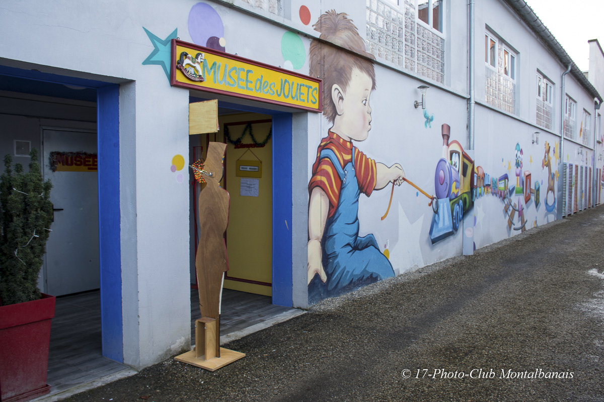

BIENVENUE AU MUSÉE DES JOUETS

Équipe des bénévoles 2022
L’enfance est le pays du rêve et les jouets ont une grande importance, l’enfant y est roi. Les jouets font partie de notre patrimoine, de notre histoire commune et sont l’objet d’une culture millénaire. Au moment où nous entrons dans le monde du numérique et du virtuel, venez visiter ce musée rempli de jouets et de jeux qui ont émerveillé des milliers et des milliers d’enfants, de jeunes et de moins jeunes. Bienvenue à vous tous.